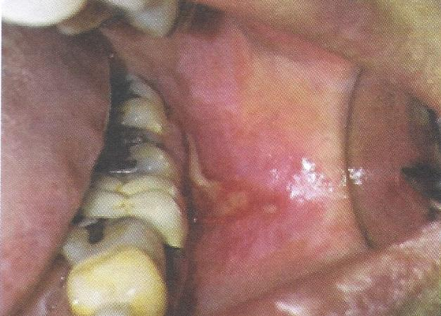

Oral lichenoid reaction
Oral lichenoid contact reaction
lichenoid contact lesions พบในบริเวณที่สัมผัสกับวัสดุที่เป็นสาเหตุ เช่น amalgam ครอบฟันโลหะ ฟันปลอมถอดได้
lichenoid drug reactions ผลจากยารักษาโรคทางระบบกระตุ้นให้เกิดรอยโรค เช่น NSAIDS, anxiolytic drug, antihypertensive drug
ลักษณะทางคลินิก รอยโรคสีขาวที่มีลักษณะร่างแหสีขาว Wickham striae
ร่วมกับมีรอยแดงหรือแผลถลอก
การวินิจฉัย ร่วมกับการซักประวัติ ลักษณะทางคลินิก และผลตรวจทางจุลพยาธิวิทยา
การรักษา หากกำจัดสาเหตุ รอยโรคจะหายไปหรือดีขึ้น